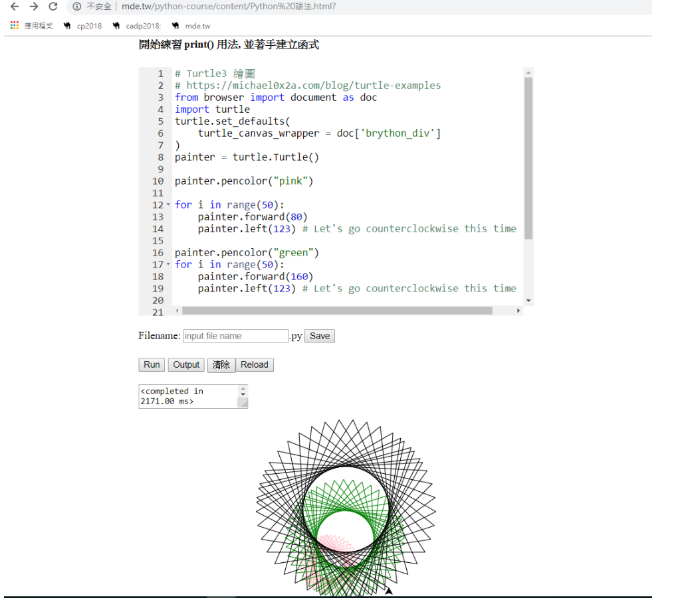
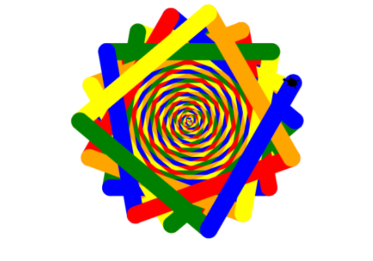

練習python語法
開始練習 print()用法,並著手建立含式
# Turtle3 繪圖
# https://michael0x2a.com/blog/turtle-examples
from browser import document as doc
import turtle
turtle.set_defaults(
turtle_canvas_wrapper = doc['brython_div']
)
painter = turtle.Turtle()
painter.pencolor("pink")
for i in range(50):
painter.forward(80)
painter.left(123) # Let's go counterclockwise this time
painter.pencolor("green")
for i in range(50):
painter.forward(160)
painter.left(123) # Let's go counterclockwise this time
painter.pencolor("black")
for i in range(50):
painter.forward(240)
painter.left(123) # Let's go counterclockwise this time
turtle.done()

# Turtle6 繪圖
from browser import document as doc
import turtle
import math
turtle.set_defaults(
turtle_canvas_wrapper = doc['brython_div']
)
t = turtle.Turtle("turtle")
t.speed(10)
colors = ['red', 'orange', 'yellow', 'green', 'blue']
for x in range(250):
t.pencolor(colors[x % 5])
t.width(x/10 + 1)
t.forward(x)
t.left(100)
turtle.done()
